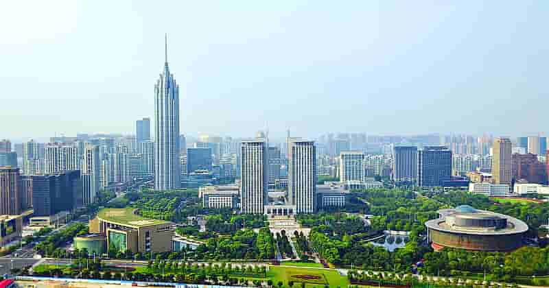
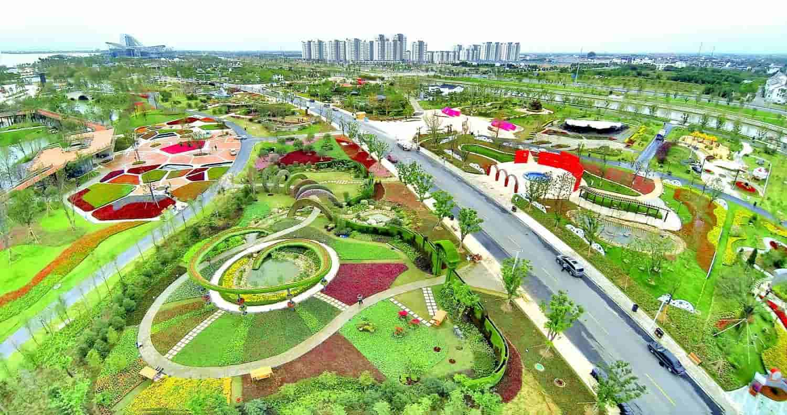
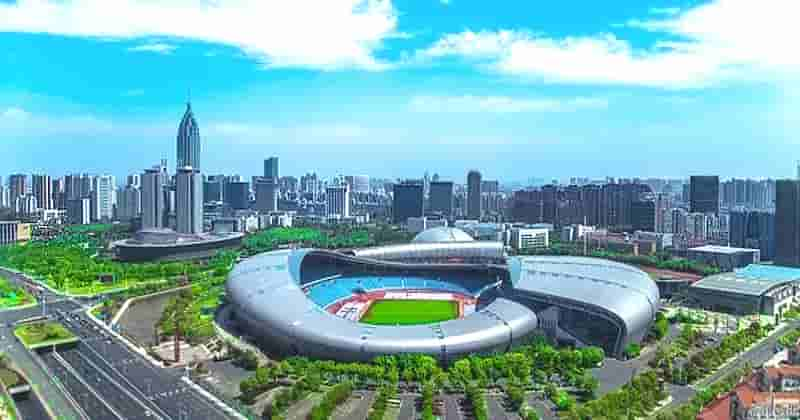
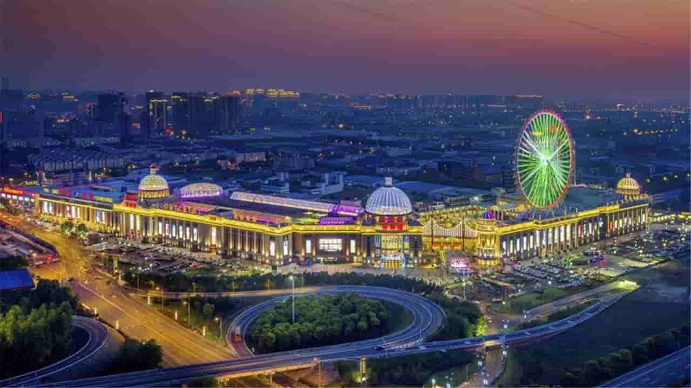

区位条件优势明显。常州,别称"龙城"，位于北纬31°09′至32°04′、 东经119°08′至120°12′，地处江苏省南部、长三角腹地，东与无锡相邻，西与南京、镇江 接壤，南与无锡、安徽宣城交界，与上海、南京两大都市等距相望，区位条件优越。现辖金 坛、武进、新北、天宁、钟楼5 区，代管溧阳市1个县级市，共有36个镇、25个街道。  历史文化名人荟萃。常州是一座有着3200多年历史的文化古城。 春秋末期（前547年），吴王寿梦第四子季札封邑延陵，开始了长达2500多年有准确纪 年和确切地名的历史。西汉高祖五年（前202年）改称毗陵。西晋武帝太康二年（281年） ，改置毗陵郡。自此，常州历朝均为郡、州、路、府治所，曾有过延陵、毗陵、毗坛、晋 陵、长春、尝州、武进等名称，隋文帝开皇九年（589年）始有常州之称。于1949年设市。 风景名胜、历史古迹有圩墩村新石器遗址、春秋淹城遗址、天宁寺、红梅阁、文笔塔、北宋 藤花旧馆、苏东坡舣舟亭、太平天国护王府遗址、瞿秋白纪念馆、中华恐龙园、溧阳天目湖 旅游度假区、金坛茅山风景区、动漫嬉戏谷主题公园、东方盐湖城、华夏宝盛园等等。目前 共有省级以上旅游度假区4家，其中国家级旅游度假区1家；国家A级景区32家，其中5A级旅 游区3家，4A级旅游区8家。历史名人有吴公子季札，《昭明文选》作者萧统，抗倭英雄唐荆 川，"南田三绝"恽格（号南田），"常州三杰"瞿秋白、张太雷、恽代英，数学家华罗庚， 实业家刘国钧，书画家刘海粟等。主要特产有萝卜干、大麻糕、芝麻糖、溧阳风鹅、野山笋、 溧阳水芹、南山板栗、长荡湖螃蟹、常州梳篦、砖刻屏、景泰蓝掐丝工艺画、乱针绣、中国 彩绒画、留青竹刻、金坛刻纸。 生态绿城推进建设。2019年建成区绿地总面积10727.1公顷，比上 年增长2.4%。建成区绿化覆盖率达43.25%。全年累计增核4000亩、扩绿2500亩、连网50 公里，创成全国绿化模范城市。特色田园乡村和全域美丽乡村建设持续推进，溧阳市礼诗圩 等4个试点村庄被正式命名为江苏省第一批次特色田园乡村，数量居全省第一；首批“两区十 点”美丽乡村示范项目全面完成主体核心区建设，3个村庄获评中国美丽休闲乡村。  经济运行保持平稳。 经初步核算，2019年实现地区生产总值（GDP）7400.9亿元， 按可比价计算增长6.8%，增速居全省第三。分三次产业看，第一产业实现增加值157亿元，下降2%； 第二产业实现增加值3529.2亿元，增长8.4%；第三产业实现增加值3714.7亿元，增长5.8%。三次产 业增加值比例调整为2.1∶47.7∶50.2。全市按常住人口计算的人均地区生产总值达156390元，按平 均汇率折算达22670美元。  财政收入平稳增长。 2019年完成一般公共预算收入590亿元，增长5.3%， 增幅高于全省平均3.3个百分点，居全省第二。一般公共预算收入中税收收入501.6亿元，增长2.5%， 占一般公共预算收入的比重为85%，税收占比全省第三。其中，增值税220.9亿元，增长1.4%；企业 所得税80.4亿元，下降0.9%；个人所得税23.4亿元，下降29.7%；契税57.2亿元，增长44.3%。2019 年一般公共预算支出653.7亿元，增长9.9%。民生领域支出增长较快，节能环保支出27.2亿元，增长 54.6%；社会保障和就业支出82.0亿元，增长22.1%。 
人才引进有资助。对企业新引进的人才给予补贴：
1.45周岁以下的全日制博士研究生(包括境外取得博士学位的归国留学人员)，给予最高30万元购房补贴。
2.35周岁以下的世界一流大学建设高校、《泰晤士报》高校排名400强大学、中国科学院大学、中国社会科
学院大学的全日制本科生，给予5万元购房补贴。
3.35周岁以下符合我市产业发展的紧缺工种高级技师、技师分别参照硕士研究生、世界一流大学建设高校
本科生，给予5万元购房补贴。
4.全日制普通高校应届博士、硕士、学士毕业生可分别享受市财政給予的每月800元、600元、500元房屋租
金补贴，补贴期限累计不超过24个月。
博士后进站科研有奖励。全市86家博士后科研工作站招收的博士后,除用人单位给予工资
福利外,市财政给予12万元生活补贴,出站后留常企业工作的，可以享受3万元留常奖励和30万元购房补贴。
大学生创业有支持。在常大学生创业享有的补贴政策：
一是在领取营业执照3年内可申请享受最高8000元的开业补贴；
二是大学生创业者本人可以享受最长3年的社保补贴；
三是企业吸纳本市登记失业人员或大学生就业，每新增带动1人就业给予5000元补贴，累计不超过10万元。
四是进入人社部门认定的创业园创业的可享受最长3年、每月1000元的租金补贴；
五是符合条件的创业者在创业失败后，可申请最高不超过1万元的创业失败补贴。
六是大学生创业企业需要资金的，可申请10—50万的富民创业担保贷款，并给予相应贴息。
研究生社会实践有资助。全国各地高校在读研究生到我市参加社会实践的，
除用人单位给予生活补贴、安排住宿外，往返交通费及人身意外险费用由政府承担。完成课题项目的，
政府给予2000-3000元/人奖励，同时给予指导老师1000—2000元/人的带教补贴。
就业见习有补贴。未就业高校毕业生到我市354家就业见习基地参加就业见习的，
除企业给予相应待遇外,市财政每月给予常州市最低工资标准60%（2020元*60%=1212元）的生活补贴,
并可办理工伤保险或意外伤害保险。
就业服务保障。新来常州就业创业并参加社会保险的应届高校毕业生、技工院校高级工班和技师班（预备技师班）
应届毕业生，可申请办理专属地铁卡，自办卡之日起给予一年免费乘坐地铁通勤支持。全市各级人
才和公共就业服务机构免费为高校毕业生提供档案托管、就业登记、创业培训、项目论证、开业指
导等服务；对未就业高校毕业生实行实名制登记和重点服务。